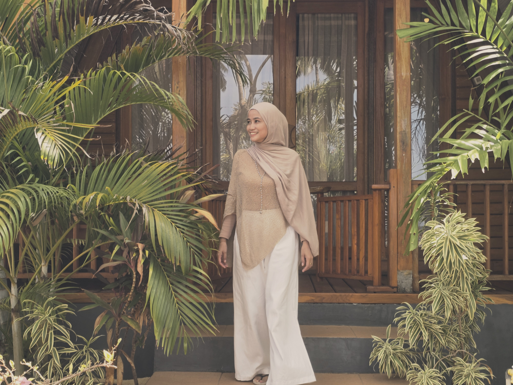
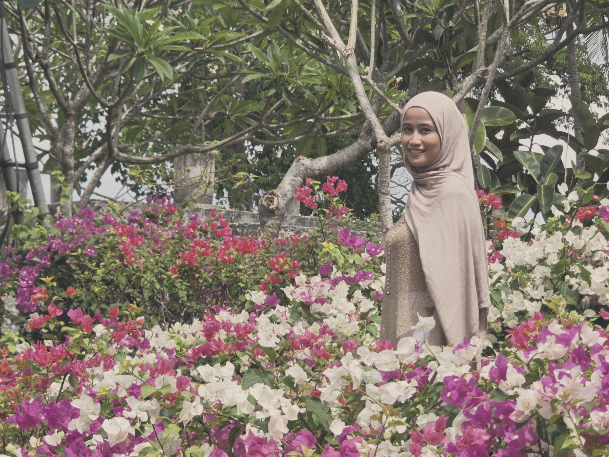
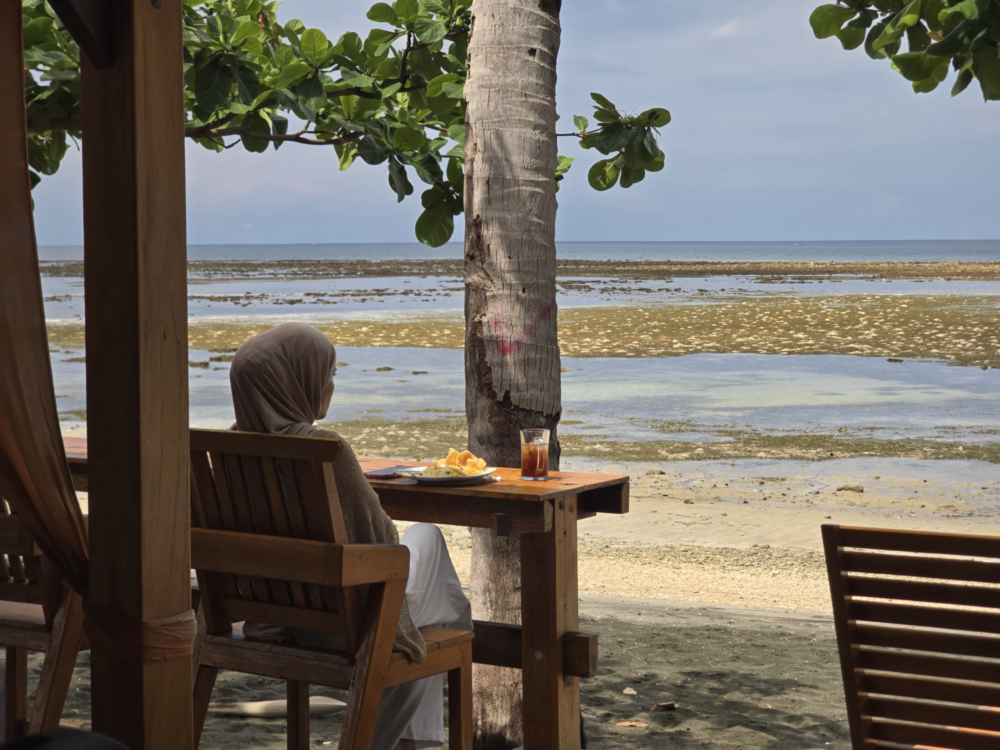
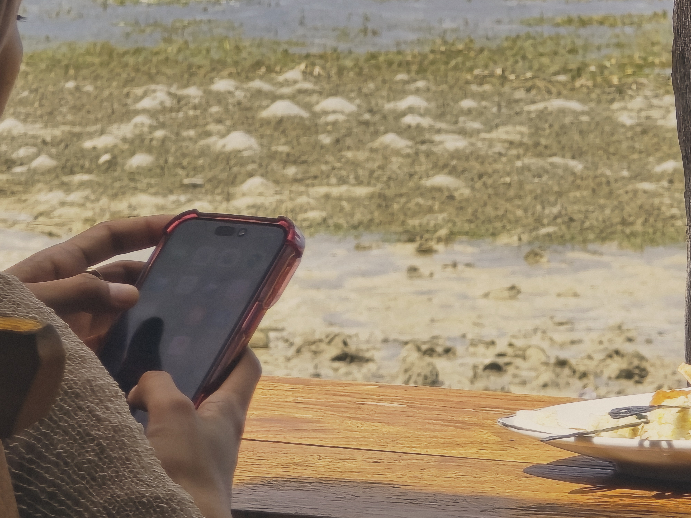
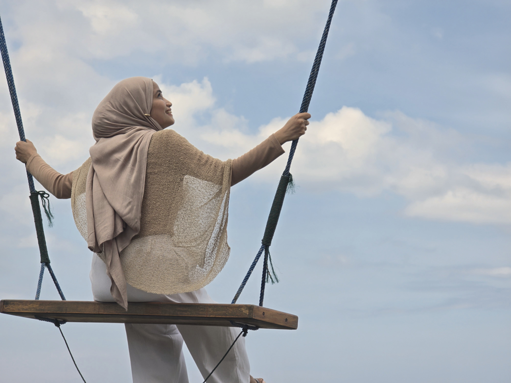

Sebuah cerita · Pantai Sunari
Hari ketika aku belajar
menari bersama waktu.
menari bersama waktu.

01pagi, tanpa rencana

02angin mengajak berdansa

03tersenyum tanpa alasan

04karang jadi lantai dansa

05laut yang bercerita

06teh dingin & kerupuk

07kupotret sekali saja

08lalu aku ikut menari

09bersama angin Selayar
Beberapa tempat hanya dikunjungi.
Sebagian lagi, dikenang.
Pantai Sunari · Selayar